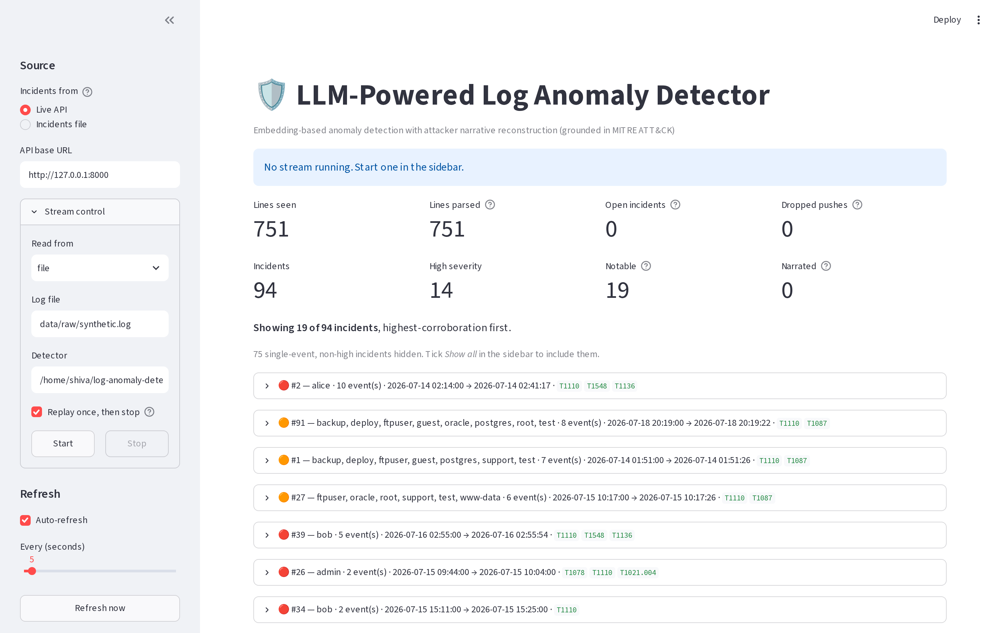
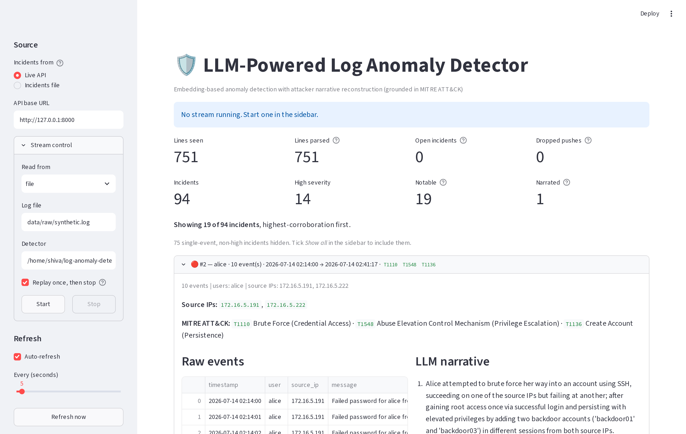
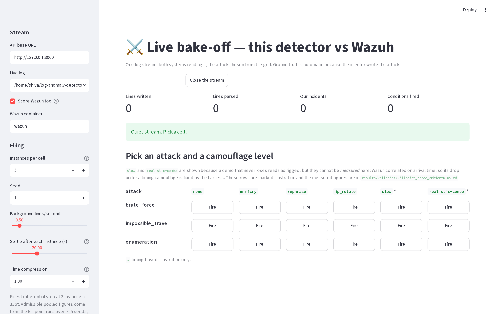
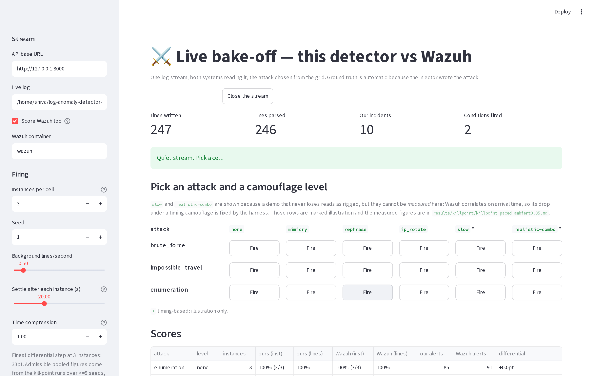

Failed password for root matches; the same
event worded differently does not.Speaker line: "The tools in use today read the words, not the meaning."
Everything here is our own measurement on real logs, not a claim from a website.
Failed password, Accepted password, Invalid user, pam_unix.
– No coverage at all for the commonest attack surface on Linux.Sources: CLAUDE.md Decision Log 2026-08-18; results/bakeoff/bakeoff.md;
results/killpoint/killpoint_ambient0.05.md.
Journal papers only — IEEE Transactions and Web of Science / Scopus indexed journals. Full PDFs are attached with this presentation.
| # | Paper | Journal, Year | Method | Finding | Limitation |
|---|---|---|---|---|---|
| R1 | LogFiT — Almodovar et al. | IEEE Trans. Network & Service Management, 2024 | BERT fine-tuned on log text, self-supervised | Language models read logs without labelled data | Tested on clean benchmark logs only; no evading attacker |
| R2 | Landauer et al. — survey of deep learning for log anomaly detection | Machine Learning with Applications (Elsevier), 2023 | Survey of the field | Maps every major method and dataset | Reports that evaluation is almost always on static, non-adversarial data |
| R3 | Ali et al. — ML techniques for log anomaly detection | Empirical Software Engineering (Springer), 2025 | Classical ML vs deep learning, measured | Simpler models compete with deep models on log data | Clean data only; no attacker adapting |
| R4 | Wu, Li & Khomh — effectiveness of log representation | Empirical Software Engineering (Springer), 2023 | Compares how logs are turned into vectors | Representation choice changes results a lot; embeddings work well | Does not test reworded or disguised attacks |
| # | Paper | Journal, Year | Method | Finding | Limitation |
|---|---|---|---|---|---|
| R5 | Khan et al. — impact of log parsing | Empirical Software Engineering (Springer), 2024 | Measures how parsing quality affects detection | Bad parsing quietly ruins detection accuracy | Parsing studied on clean logs |
| R6 | Pang et al. — deep learning for anomaly detection: a review | ACM Computing Surveys, 2021 | Field review | Standard definitions and method families | General; not security-log specific |
| R7 | Kheddar — transformers and LLMs for intrusion detection | Information Fusion (Elsevier), 2025 | 2025 survey | LLMs are moving into intrusion detection fast | Evaluation still on fixed public datasets |
| R8 | Debicha et al. — TAD: detecting evasion attacks against intrusion detection | Future Generation Computer Systems (Elsevier), 2023 | Attackers actively evading a detector | Evasion measurably breaks detectors | Network traffic, not logs; no SIEM comparison |
What all eight share: the attacker is not trying to hide from the detector being tested. R8 is the only one with a real adversary, and it is on network traffic.
| What exists | Gap |
|---|---|
| Rule-based SIEMs match fixed text patterns [R2, R7] | Miss the same attack once it is reworded — we measured 91% → 29% |
| Log anomaly models are evaluated on clean benchmark data [R1, R3, R4, R5] | Nobody reports how much detection survives when the attacker actively hides |
| Adversarial evasion is studied for network intrusion detection [R8] | Not for log analysis, and never against a real SIEM ruleset side by side |
Our gap, in one line: how much worse does each system get when the attacker tries to hide — measured, on the same logs, at the same moment, for a research detector and a production SIEM together.
Robustness (5 seeds, real OpenSSH logs, both systems on the same corpus). The number is the drop in detection when the attack is camouflaged: bigger is worse.
| Camouflage | Us | Wazuh | Difference |
|---|---|---|---|
Reworded (rephrase) |
−2.2 | −33.3 | +31.1 in our favour |
| Mimicry / noise / volume / timing | 0.0 | 0.0 | tie ×4 |
| IP rotation | −11.1 | 0.0 | −11.1 against us |
| Slowed down | −8.9 | 0.0 | −8.9 against us |
| Realistic combination | −13.3 | 0.0 | −13.3 against us |
Result: 1 win, 4 ties, 3 losses. The registered threshold (≥25 points on at least one strategy, written into git before we had any result) is cleared by rewording, so the project continues — but the honest claim is narrow: signature rules break when you reword an attack; embeddings do not.
Live demonstration of the same effect (results/bakeoff/bakeoff.md, 18 conditions):
rewording an impossible-travel attack took Wazuh from 3 of 3 instances to 0 of 3,
while we stayed at 3 of 3 — a 100-point gap, live.
Where we are weaker, stated by us: precision 0.29 — 94 incidents raised for 9 real attacks. Impossible travel is caught by a distance-over-time rule, not by the embeddings. IP rotation, slowing down and the realistic combination all beat us and not Wazuh. Fixing precision is the next stage of work.




Software
uvsentence-transformers (all-MiniLM-L6-v2) — turns a log line into a vector of its meaningscikit-learn Isolation Forest — flags the unusual ones, one model per userData
Hardware
| Task | Month 1 | Month 2 | Month 3 | Month 4 |
|---|---|---|---|---|
| Literature review | ✓ | |||
| Requirement analysis | ✓ | ✓ | ||
| Design | ✓ | |||
| Development | ✓ | |||
| Testing | ✓ | |||
| Documentation | ✓ |
Completed so far: foundation and test suite; benchmark platform with a real SIEM; the pre-registered robustness measurement; live streaming, API and dashboard; the live side-by-side bake-off.
Next: sequence modelling to fix precision, then an entity graph for correlation, then attacks generated by real tools on the Kali machine.
All eight are journal papers; the PDFs are attached with this presentation
(references/, and combined-references.pdf for all of them in one file).
Questions